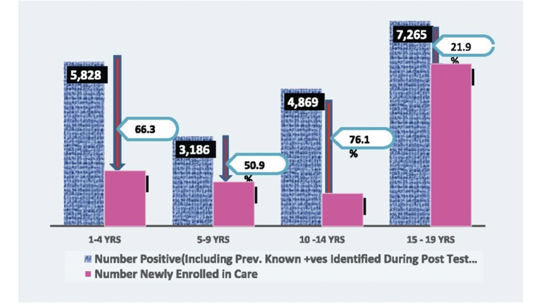
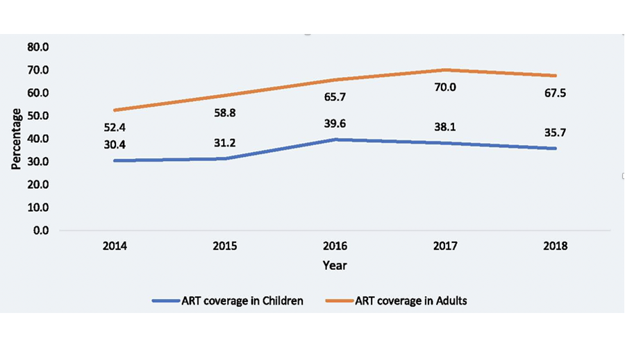

Case identification through HIV testing is the gateway to HIV treatment, care, and support for children and adolescents. However, many children and adolescents living with HIV remain unidentified. This limits the early initiation of antiretroviral therapy, the survival of HIV-infected children and adolescents.
An increase has been recorded in the number of sites providing HIV testing services (HTS) from 8,114 in 2014 to 8,373 in 2018. This has contributed to about 60% increase in the number of identified children and adolescents living with HIV. However, this is far below the 23,600 sites required to provide full coverage (desk review of NSP 2010-2015).
A huge gap still exists in the identification of children and adolescents living with HIV, which must be addressed to increase access to life-saving treatment and care. Factors that may militate against case identification include poor health care-seeking behavior, limited health care providers and training, limited access to appropriate HIV diagnostic services, and less than optimal PMTCT services coverage. Additionally, a shortage of test kits and lower prevalence than the larger adult group requires more targeted, innovative case-finding strategies both at facility and community levels.
The diagnosis of HIV is of no benefit to the child or adolescent in the absence of appropriate linkage to treatment and care. Non-linkage to HIV treatment and care services continues to erode the gains of improved HIV case identification among children and adolescents over the years.
In 2018, the linkage of children and adolescents identified to be HIV positive occurred in 33.7%, 49.1%, 23.9% and 79.1% of children and adolescents aged 1-4 years, 5 – 9years, 10 – 14 years and 15 – 19 years respectively. This translates to a wide gap in linkage to care as seen in Figure 1. The Adoption of the “Test and Treat” strategy in 2016 has contributed to an improvement in the number of HIV-positive children 0-14 years initiated on ART.
Despite these improvements, some barriers continue to militate against effective linkage to care and initiation on treatment. These include long turnaround times for diagnostic, baseline tests and treatment, users' fees, lack of efficient mother-infant pair tracking systems, stigma and discrimination, socio-cultural & religious beliefs, poor attitude of healthcare workers, parents/caregivers' issues, dysfunctional family, single parenthood, lack of transportation, disclosures issues and inadequate human resource capacity for the children and adolescent population.

The current trend analysis for ART coverage shows that paediatric ART (0-14years) coverage is 35.7% in contrast to adult ART coverage of 67.5% (Figure 2). Factors contributing to the low coverage include the limited capacity to provide paediatric ART services, inadequate child and adolescent-friendly ART services and shortage of paediatric ARV formulations. The Rapid Advice on ART recommendations released in 2018 (FMOH 2018) addressed optimal first-line antiretroviral therapy for children and adolescents living with HIV in Nigeria. However, the non-availability of the newly recommended paediatric ART drugs and formulations due to procurement challenges & non approval has persisted and continues to adversely affect the rollout of the optimized regimen.

The National HIV Service Cascade Assessment and Survival Analysis study conducted in 2019 showed a one-year retention rate of 76% among children initiated on ART. Some of the challenges of retention in care include caregivers' apathy, lack of synchronization of clinic appointments of mother-child pair, pill burden, lack of disclosure to children and adolescents about their HIV status, fear of stigma and discrimination, and limited adolescent-centered programs among others.
There is still a wide gap in achieving the third 90 of the UNAIDS 90:90:90 target. Viral load coverage and suppression rate for children were 56% and 53.8% respectively while viral load coverage for adolescents aged 15-19 years was 59.6% with 51.7% suppression rate (FMOH 2018). Poor logistics of sample transfer and result retrieval, inadequate human resources & capacity, infrastructural and supply chain challenges, drugs and commodities stock out, heavy reliance on donor funding and poor adherence to treatment are some major contributing factors militating against achievement of the third 90.
The National Integrated Sample Referral Network (NISRN) was adopted in 2018 to overcome logistic challenges. While there has been progressive improvement in the quality and coverage of services, the implementation is still challenged by facility-level resistance, an insufficient number of staff/riders, infrastructural challenges such as erratic power supply as well as poor management of sample pick-ups and result delivery.